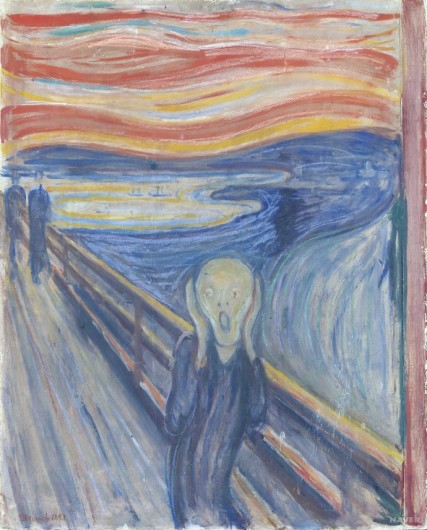

내일 '천안함' 명명 호위함 진수식‥최원일 전 함장 "불참하겠다"
신형 호위함으로 부활하는 '천안함' 진수식에 최원일 전 함장이 불참하겠다고 밝혔습니다.
최 전 함장은 오늘 자신의 페이스북에서 천안함 침몰 원인으로 '잠수함 충돌설'을 퍼뜨린 유튜브 콘텐츠에 대해 방송통신심의위가 문제없다는 결정을 내렸다는 기사를
공유하고
대통령은 천안함이
북한소행이라는데 이들은 어느 나라 기구인가?
라며 내일 천안함 진수식 참가는 불가하다
라고 적었습니다.
해군은 내일 울산 현대중공업에서 '천안함'으로 명명된 신형 대구급 호위함(FFG-Ⅱ) 7번함의 진수식을 개최할 예정입니다.
대구급 호위함은 대공·대함·대잠수함 작전은 물론 대지상전까지 수행할 수 있는 막강한 화력을 갖춘 2천800t급 함정입니다.
정부는 천안함 유족회와 천안함재단 등의 요청에 따라 새 대구급 호위함 7번함에 '천안함'이란 이름을 붙였습니다.
문재인 대통령은 지난 3월 경기도 평택 해군 제2함대사령부에서 열린 '제6회 서해수호의 날' 기념사에서 대구급 호위함 7번함이 '천안함'으로 명명됐다고 밝힌 바 있습니다.
진수식에는 당초 최원일 전 함장과 피격 당시 숨진 장병들의 유족들이 다수 참석할 것으로 알려졌으나, 최 전 함장이 불참 의사를 공개적으로 밝히면서 파장이 예상됩니다.
이정우 화이팅!
이정우개발자 이정우화이팅! 프론트엔드
양효경(snowdrop@mbc.co.kr)원본기사
천안함
2010년 3월 26일 밤 9시 22분, 대한민국 백령도 남서쪽 약 1km 지점에서 포항급 초계함인 PCC-772 천안함이 초계임무 수행도중 북한 해군 잠수정의 어뢰에 공격당해 선체가 반파되며 침몰한 사건이다.우리나라대한민국만세
오늘의 작품 & 느낌
뭉크의 <절규>
언론사 주요뉴스
정치분야 랭킹뉴스
분야별 주요뉴스
- 정치
- 김 총리 "충북 음성 고병원성 AI, 확산 않도록 모든 노력"
- 윤석열 46.2% vs 이재명 34.2%… 20대 표심은 갈대?
- 경제
- 현대백화점 사장, 방역수칙 어기고 무허가 유흥업소 방문해
- 윤종규 KB금융 회장 "고객 마음 항상 관찰해 변화 노력하자"
- 사회
- 팀 쿡 “암호화폐 투자는 개인적 결정, 애플과 관련 없어”
- 화이자 CEO "부스터샷 효력 1년 갈듯…매년 접종해야
언론사별 가장 많이 본 뉴스
| 靑 "요소수, 비료인 줄"... '요소수 대란'은 정부 부 … |

|
| “최대 2천만원 용돈벌이” 너도나도 뛰어든 ‘이것’ 사라진 … |

|
| 명분도 효과도 감동도 없다…이재명 전국민지원금에 없는 3가 … |

|